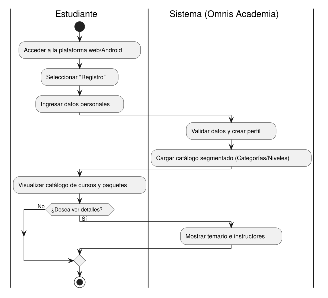
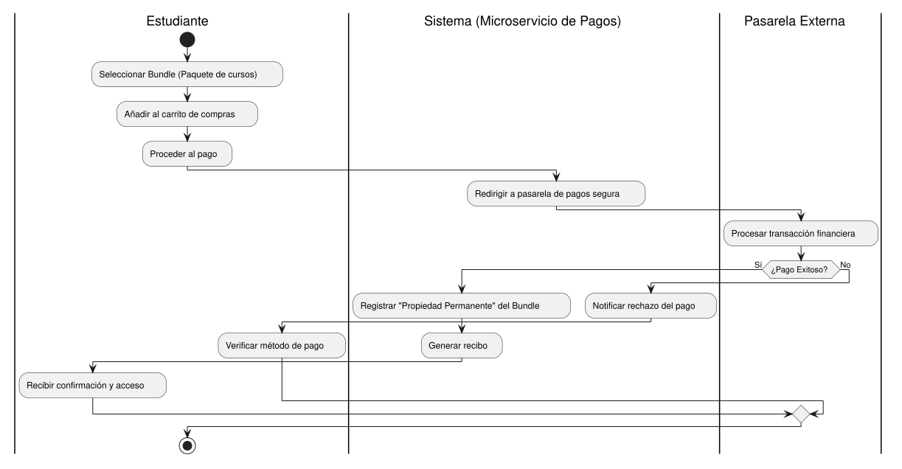
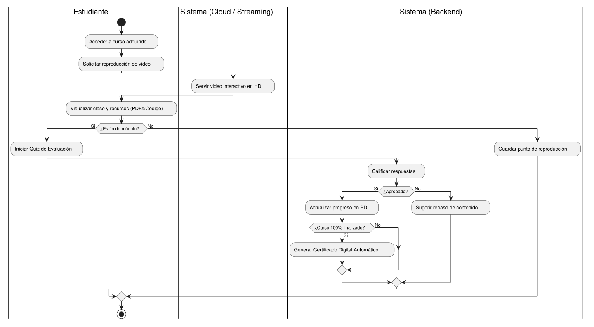

Cadena de valor de la plataforma
Mapa de primer nivel y los tres procesos clave que generan los productos del servicio.
Procesos estratégicos
Planeación académica y comercial · Evaluación (SGC)
Procesos clave
Procesos de apoyo
Administrativos (Marketing y Cobranza) · Soporte TI (Cloud Computing)
Insumos
Solicitudes de registro, datos personales, datos de pago, interacción en curso.
Productos
Perfiles, catálogo segmentado, bundles, cursos HD y certificados digitales.
Clientes
Alumnos, profesores, instructores y administradores.
Gestión de Usuarios y Catálogo
- 1.1
Acceso a la plataforma
Ingreso a la aplicación web o móvil (Android en Kotlin).
- 1.2
Ingreso de datos
Captura de información básica para el registro de perfil.
- 1.3
Validación y creación
Se verifica la integridad, se crea el registro y se genera el perfil.
- 1.4
Carga de catálogo
Catálogo segmentado con uso de caché para agilizar la carga.
- 1.5
Visualización de detalles
El usuario ve la información de un curso o instructor.
Gestión de Ventas (Bundles)
- 2.1
Selección de bundle
El usuario elige un paquete temático para un rol laboral.
- 2.2
Intento de pago
Se ingresan los datos para la transacción por volumen.
- 2.3
Procesamiento seguro
El microservicio de pagos valida vía API evitando brechas.
- 2.4
Registro de propiedad
Se otorga "propiedad permanente" del bundle al usuario.
- 2.5
Notificación
Se informa el éxito o rechazo de la transacción.
Aprendizaje y Evaluación
- 3.1
Solicitud de streaming
El usuario inicia la reproducción del video interactivo.
- 3.2
Despliegue de contenido
Los servidores en la nube sirven el streaming en HD.
- 3.3
Consulta de recursos
Descarga o visualización de PDFs y código fuente.
- 3.4
Resolución de quiz
El sistema valida respuestas y actualiza el progreso en BD.
- 3.5
Certificación digital
Al 100% de la ruta se emite el certificado automático.
Diagramas de actividad
Flujo detallado de cada proceso clave en notación de actividades (UML), con sus calles por responsable. Toca un diagrama para abrirlo en grande.
Gestión de Usuarios y Catálogo

Gestión de Ventas (Bundles)

Aprendizaje y Evaluación
